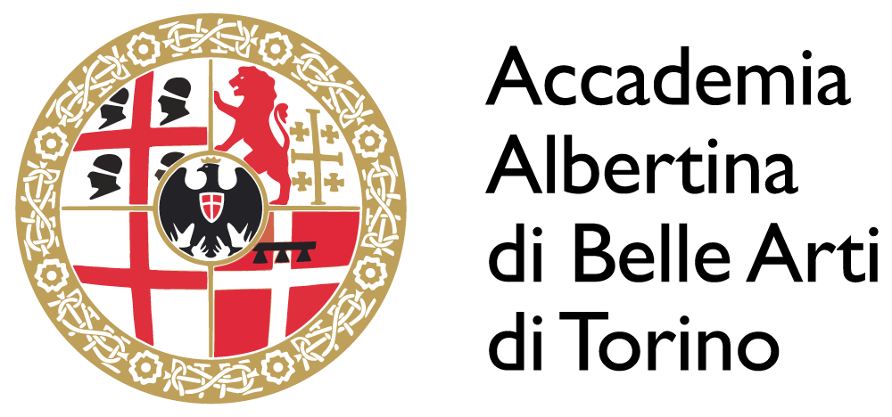

Hi, I'm Zheng Chen — a multidisciplinary designer, researcher, and creative technologist working at the intersection of interaction design, artificial intelligence, sensing technologies, and embodied experiences.
My academic journey spans China, Italy, Switzerland, and Japan. I earned my Bachelor's degree in New Technologies of Art from the Accademia Albertina di Belle Arti di Torino in Italy and am currently pursuing a Master's degree in Interaction Design at SUPSI (University of Applied Sciences and Arts of Southern Switzerland). I am also conducting research in Japan through international exchange and collaboration programs focused on design, emerging technologies, and creative innovation.
My work explores how technology can help people perceive what they cannot normally see, feel, or understand. I am particularly interested in the relationships between humans, animals, intelligent systems, and their environments, and how data, sensing, and interaction can reveal hidden forms of communication, behavior, and experience.
Drawing from art, design, craftsmanship, and engineering, I create intelligent products, interactive installations, wearable systems, digital experiences, and speculative prototypes. My projects range from AI-powered services and data visualization platforms to sensor-based devices and physical computing systems, always with a focus on human-centered design and meaningful interaction.
Currently, I am developing YUMA (Reflective Riding System), an intelligent equestrian platform that combines wearable sensing, real-time data visualization, and interaction design to support communication and understanding between riders and horses. The project has been exhibited in Japan and featured as part of the SUPSI–Kyoto Sangyo University exchange program supported by Swissnex in Japan.
Beyond individual projects, I am interested in building new forms of collaboration between design, technology, culture, and society. I believe the future of design is not only about creating products, but also about creating understanding, connection, and shared experiences across disciplines, cultures, and species.
My goal is to design technologies that are not only intelligent, but also meaningful, accessible, and deeply human.
Designing Embodied Feedback for
Post-Training Reflection
An interaction design exploration in professional
show jumping.
Focusing on advanced interaction design, user experience, and digital innovation. Specializing in human-computer interaction and intelligent systems design.

Comprehensive study of visual communication, digital media, and design principles. Emphasis on creative problem-solving and artistic expression.
University for Foreigners of Perugia, Italy
Earned CELI B2 (168/180). Gained understanding of Italian culture and society.
Nanjing Normal University, Nanjing, China
Completed institutional training and received certification.
I believe interaction design should empower imagination, foster empathy, and remain deeply human.
Accademia Albertina di Belle Arti di Torino
Recognized for innovative approach to human-computer interaction in final year project.
Italian Ministry of Education
Awarded for outstanding contributions to digital art and technology integration.
Florence, Italy
Participated with a painting and received a certificate of recognition.